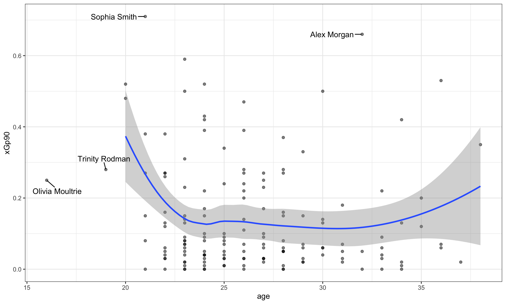
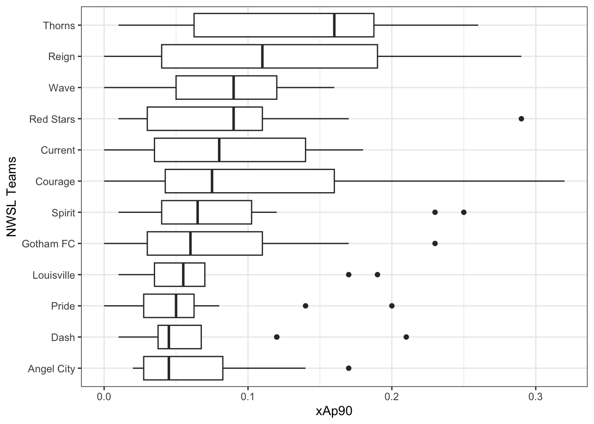
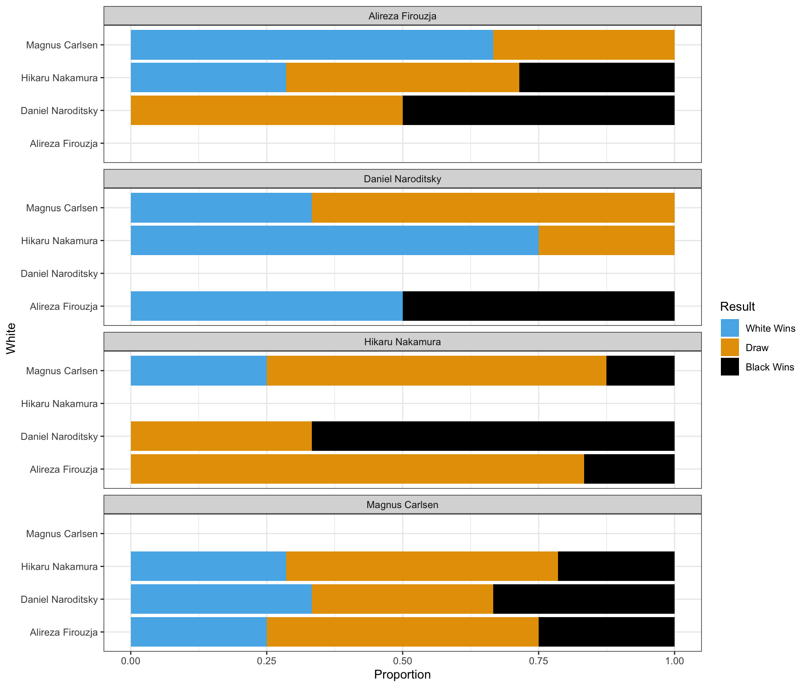

library(tidyverse)
library(skimr)
nwsl_player_stats <- read_csv("https://bcdanl.github.io/data/nwsl_player_stats.csv")Midterm Exam II
Version B
Section 1. Multiple Choice
Question 1
Which of the following is NOT listed as a key characteristic of a Data Warehouse?
- It integrates data from multiple sources (internal and external).
- It is designed primarily for real-time transaction processing.
- It is schema-based, requiring data to fit a predefined structure.
- It often includes 5+ years of historical, archived data.
Show answer
Answer: b
A data warehouse is designed mainly for analytics and historical querying, not for real-time transaction processing.
Question 2
When the distribution of a variable has a single peak and is positively skewed (i.e., having a long right tail), which of the following is correct?
- Median = Mean = Mode
- Median < Mode < Mean
- Mean < Median < Mode
- Mode < Median < Mean
Show answer
Answer: d
For a positively skewed distribution (long right tail), the order is:
Mode (at the peak) < Median < Mean (pulled right by large values).
Question 3
What is NOT an essential component in ggplot() data visualization?
- Data frames
- Geometric objects
- Facets
- Aesthetic attributes
Show answer
Answer: c
Facets are useful but optional. You can build a valid ggplot without them.
Question 4
____(1)____ does not necessarily imply ____(2)____
- Correlation; (2) causation
- Causation; (2) correlation
- Correlation; (2) correlation
- Causation; (2) causation
Show answer
Answer: a
The classic warning: correlation does not imply causation.
Question 5
In the context of the lecture, which of the following correctly interprets a change in log-transformed GDP per capita and its meaning for GDP per capita?
- A 0.01 increase in log(GDP per capita) corresponds to a 1% increase in GDP per capita.
- A 1-unit increase in log(GDP per capita) corresponds to a 1% increase in GDP per capita.
- A one-unit increase in GDP per capita means an 8.4% increase in GDP per capita.
- Both (a) and (c) are correct.
Show answer
Answer: a
For small changes, a change of 0.01 in log(GDP per capita) is approximately a 1% change in GDP per capita.
Question 6
Which “V” of Big Data is most directly about whether the data is accurate and trustworthy?
- Value
- Velocity
- Variety
- Veracity
Show answer
Answer: d
Veracity is about data quality, accuracy, and trustworthiness.
Section 2. Filling-in-the-Blanks
Question 7
____________________ describes how the values of a variable are spread or grouped within a dataset, while ____________________ is the tendency of a variable’s values to differ from one measurement to another.
Show answer
First blank: distribution
Second blank: variability
Question 8
In the context of time trend analysis, a fitted curve is often added to a line chart to help smooth out ____________________ to reveal the overall pattern.
Show answer
short-term fluctuations
Question 9
The gg in ggplot stands for ____________________.
Show answer
Grammar of Graphics
Question 10
Using ____________________—a machine learning method—the geom_smooth() visualizes the ____________________ value of the y variable for a given value of the x variable. The grey ribbon around the curve illustrates the ____________________ surrounding the estimated curve.
Show answer
Using regression — a machine learning method — the geom_smooth() visualizes the predicted value of the y variable for a given value of the x variable. The grey ribbon around the curve illustrates the uncertainty surrounding the estimated curve.
Question 11
When observing a histogram, if the distribution has two distinct peaks, it is described as ____________________; whereas a distribution where values are relatively equal across the range is described as ____________________.
Show answer
First blank: bimodal
Second blank: uniform
Question 12
When visualizing the distribution of a single numerical variable using geom_histogram(), you must choose between specifying the number of ____________________ or the ____________________ of the intervals. You cannot specify both simultaneously.
Show answer
First blank: bins
Second blank: width
Section 3. Data Transformation and Visualization with R
Questions 13-19
For Questions 13-19, consider the following R packages and the data.frame, nwsl_player_stats, containing individual player statistics for the National Women’s Soccer League (NWSL) in the 2022 season:
- The
nwsl_player_statsdata.frame is with 314 observations and 13 variables.
- The first 5 observations in the
nwsl_player_statsdata.frame are displayed below:
| player | nation | pos | squad | age | mp | starts | min |
|---|---|---|---|---|---|---|---|
| M. A. Vignola | us USA | MFFW | Angel City | 23 | 2 | 0 | 18 |
| Michaela Abam | cm CMR | FW | Dash | 24 | 12 | 3 | 273 |
| Kerry Abello | us USA | FWMF | Pride | 22 | 21 | 12 | 1042 |
| Jillienne Aguilera | NA | DFMF | Red Stars | NA | 17 | 5 | 580 |
| Tinaya Alexander | eng ENG | FWMF | Spirit | 22 | 9 | 1 | 167 |
| player | nation | pos | squad | xGp90 | xAp90 | xGxAp90 |
|---|---|---|---|---|---|---|
| M. A. Vignola | us USA | MFFW | Angel City | 0.00 | 0.00 | 0.00 |
| Michaela Abam | cm CMR | FW | Dash | 0.26 | 0.10 | 0.36 |
| Kerry Abello | us USA | FWMF | Pride | 0.16 | 0.05 | 0.20 |
| Jillienne Aguilera | NA | DFMF | Red Stars | 0.05 | 0.04 | 0.09 |
| Tinaya Alexander | eng ENG | FWMF | Spirit | 0.58 | 0.03 | 0.62 |
| player | nation | pos | squad | npxGp90 | npxGxAp90 |
|---|---|---|---|---|---|
| M. A. Vignola | us USA | MFFW | Angel City | 0.00 | 0.00 |
| Michaela Abam | cm CMR | FW | Dash | 0.26 | 0.36 |
| Kerry Abello | us USA | FWMF | Pride | 0.16 | 0.20 |
| Jillienne Aguilera | NA | DFMF | Red Stars | 0.05 | 0.09 |
| Tinaya Alexander | eng ENG | FWMF | Spirit | 0.16 | 0.19 |
Description of Variables in nwsl_player_stats:
player: Player namenation: Player home countrypos: Player position (e.g., GK, FW, MF, etc.)squad: Player teamage: Age of playermp: Matches playedstarts: Number of matches in which player started the gamemin: Total minutes played in the seasonxGp90: Expected goals per ninety minutesxGis simply the probability of scoring a goal from a given spot on the field when a shot is taken.
xAp90: Expected assists per ninety minutesxAis simply the probability of assisting a goal by delivering a pass that creates a scoring opportunity.
xGxAp90: Expected goals plus assists per ninety minutesnpxGp90: Expected goals minus penalty goals per ninety minutesnpxGxAp90: Expected goals plus assists minus penalty goals per ninety minutes
A player who is consistently achieving a high number of xG (or xA) will be one who is getting into a good position consistently on the field. Coaches and scouts can use this to evaluate whether a player is exceedingly (un)lucky over a given number of games, and this will help in evaluating that player’s offensive skills beyond simple counts.
The followings are the summary of the nwsl_player_stats data.frame, including descriptive statistics for each variable.
| Name | nwsl_player_stats |
| Number of rows | 314 |
| Number of columns | 13 |
| _______________________ | |
| Column type frequency: | |
| character | 4 |
| numeric | 9 |
| ________________________ | |
| Group variables | None |
Variable type: character
| skim_variable | n_missing | min | max | empty | n_unique |
|---|---|---|---|---|---|
| player | 0 | 5 | 26 | 0 | 303 |
| nation | 17 | 6 | 7 | 0 | 29 |
| pos | 0 | 2 | 4 | 0 | 10 |
| squad | 0 | 4 | 10 | 0 | 12 |
Variable type: numeric
| skim_variable | n_missing | mean | sd | p0 | p25 | p50 | p75 | p100 |
|---|---|---|---|---|---|---|---|---|
| age | 15 | 25.98 | 3.96 | 16 | 23.00 | 25.00 | 28.00 | 38.00 |
| mp | 0 | 12.61 | 6.95 | 1 | 6.00 | 14.00 | 19.00 | 22.00 |
| starts | 0 | 9.25 | 7.31 | 0 | 2.00 | 9.00 | 16.00 | 22.00 |
| min | 0 | 831.81 | 631.52 | 1 | 234.00 | 743.50 | 1398.00 | 1980.00 |
| xGp90 | 2 | 0.13 | 0.16 | 0 | 0.01 | 0.06 | 0.20 | 0.77 |
| xAp90 | 2 | 0.10 | 0.47 | 0 | 0.01 | 0.05 | 0.11 | 8.26 |
| xGxAp90 | 2 | 0.23 | 0.50 | 0 | 0.04 | 0.13 | 0.32 | 8.26 |
| npxGp90 | 2 | 0.12 | 0.14 | 0 | 0.01 | 0.06 | 0.18 | 0.77 |
| npxGxAp90 | 2 | 0.22 | 0.50 | 0 | 0.04 | 0.13 | 0.30 | 8.26 |
Question 13
Write a code to produce the above summary for the nwsl_player_stats data.frame, including descriptive statistics for each variable.
Answer: ______________________________________________
Show answer
skim(nwsl_player_stats)
Question 14
What code would you use to count the number of players in each team?
nwsl_player_stats |> count(player)nwsl_player_stats |> count(nation)nwsl_player_stats |> count(pos)nwsl_player_stats |> count(squad)
Show answer
d
Question 15
What is the median value of starts? Find this value from the summary of the nwsl_player_stats data.frame.
Answer: ______________________________________________
Show answer
9
Question 16
- We are interested in players who score or assist on a goal.
- To achieve this, we create a new data.frame, a new data.frame,
nwsl_nonGK_stats, which includes only players who are NOT a goal keeper from thenwsl_player_statsdata.frame.
nwsl_nonGK_stats <- nwsl_player_stats |>
filter(___BLANK___)- The
posvalue is “GK” for a goal keeper. Which condition correctly fills in the BLANK to complete the code above?
!is.na(pos)is.na(pos)pos != "GK"pos == "GK"- Both a and c
- Both b and d
Show answer
c
Question 17
- Additionally, we are interested in non-goalkeeper players who played matches consistently throughout the season.
- To achieve this, we create a new data.frame,
nwsl_nonGK_stats_filtered, which includes only non GK players who played in at least 10 matches (mp) and started in at least 7 matches (starts) .
nwsl_nonGK_stats_filtered <- nwsl_nonGK_stats |>
filter(___BLANK___)- Which condition correctly fills in the BLANK to complete the code above?
mp > 10 | starts > 7mp >= 10 | starts >= 7mp > 10 & starts > 7mp >= 10 & starts >= 7
Show answer
d
We want players who meet both conditions: played in at least 10 matches (mp >= 10) and started in at least 7 matches (starts >= 7). The logical operator & ensures both conditions are met.
Question 18
How would you describe the relationship between age and xGp90 (expected goals per ninety minutes) using the nwsl_nonGK_stats_filtered data.frame?
- To identify outlier players, such as star players and young players, some player names are added to such points in the plot.
- Note that it is NOT required to provide the code for adding these texts to the plot.
Complete the code by filling in the blanks (1)-(4).
ggplot(data = ___(1)___,
mapping = aes(x = ___(2)___,
y = ___(3)___)) +
geom_point(alpha = 0.5) +
___(4)___()
Blank (1)
nwsl_nonGK_stats_filterednwsl_nonGK_statsnwsl_player_stats
Show answer
a
Blank (2)
agexGxAp90xGp90xAp90
Show answer
a
Blank (3)
agexGxAp90xGp90xAp90
Show answer
c
Blank (4)
geom_fitgeom_scatterplotgeom_smoothgeom_histogram
Show answer
c
Young Players
Who are the young players under the age of 20 in the given plot?
Answer: ______________________________________________
Show answer
Olivia Moultrie and Trinity Rodman
Star Players
Who are the star players whose xGp90 is greater than 0.6 in the given plot?
Answer: ______________________________________________
Show answer
Sophia Smith and Alex Morgan
Relationship
Describe the overall relationship between age and xGp90 (expected goal per ninety minutes).
Show answer
Overall, xGp90 decreases as age increases up to about 24, after which it levels off and remains relatively constant.
This suggests that younger players tend to experience a steeper decline in xGp90 with age early on, while changes become much smaller after the mid-20s.
Question 19
How would you describe how the distribution of xAp90 (expected assist per ninety minutes) varies by teams (squad) using the nwsl_nonGK_stats_filtered data.frame?
- Note that the
squadcategories are sorted by the median ofxAp90in the plot.
Complete the code by filling in the blanks.
ggplot(data = ___(1)___,
mapping = aes(___(2)___,
y = ___(3)___)) +
___(4)___() +
labs(y = "NWSL Teams")
Blank (1)
nwsl_nonGK_stats_filterednwsl_nonGK_statsnwsl_player_stats
Show answer
a
Blank (2)
x = squady = squadx = xGxAp90y = xGxAp90x = xGp90y = xGp90x = xAp90y = xAp90
Show answer
g
Blank (3)
fct_reorder(squad, xAp90)fct_reorder(xAp90, squad)fct_reorder(squad, xGp90)fct_reorder(xGp90, squad)fct_reorder(squad, xGxAp90)fct_reorder(xGxAp90, squad)
Show answer
a
Blank (4)
geom_bargeom_boxgeom_boxplotgeom_histogram
Show answer
c
Question 20


For Question 20, you will use the following R packages and a data.frame named chess_top4, which contains information about chess games played by four of the world’s top online chess players during a special event called “Titled Tuesday” on chess.com. These games were played in a format where each player has 3 minutes to make all their moves, with 1 second added to their clock after each move. The data includes games from October 2022 to October 2024 played only among the following four players:
- Magnus Carlsen
- Hikaru Nakamura
- Alireza Firouzja
- Daniel Naroditsky
Note: Titled Tuesday is a weekly event held every Tuesday on chess.com, where titled chess players (such as Grandmasters and International Masters) compete in online tournaments.
library(tidyverse)
chess_top4 <- read_csv("https://bcdanl.github.io/data/chess_titled_tuesday.csv")The first 15 observations in the chess_top4 data.frame are displayed below:
| Date | White | Black | Result |
|---|---|---|---|
| 2022-10-11 | Hikaru Nakamura | Magnus Carlsen | White Wins |
| 2022-10-18 | Hikaru Nakamura | Alireza Firouzja | Draw |
| 2022-10-25 | Daniel Naroditsky | Alireza Firouzja | Draw |
| 2022-11-08 | Hikaru Nakamura | Alireza Firouzja | Black Wins |
| 2022-12-13 | Alireza Firouzja | Hikaru Nakamura | Draw |
| 2022-12-20 | Hikaru Nakamura | Alireza Firouzja | White Wins |
| 2022-12-20 | Magnus Carlsen | Hikaru Nakamura | Draw |
| 2023-01-03 | Daniel Naroditsky | Hikaru Nakamura | Black Wins |
| 2023-01-03 | Hikaru Nakamura | Magnus Carlsen | White Wins |
| 2023-01-24 | Hikaru Nakamura | Magnus Carlsen | White Wins |
| 2023-02-28 | Alireza Firouzja | Magnus Carlsen | Draw |
| 2023-02-28 | Hikaru Nakamura | Alireza Firouzja | Draw |
| 2023-02-28 | Hikaru Nakamura | Magnus Carlsen | Draw |
| 2023-02-28 | Magnus Carlsen | Hikaru Nakamura | Draw |
| 2023-03-14 | Hikaru Nakamura | Alireza Firouzja | White Wins |
- The
chess_top4data.frame contains 70 observations and 4 variables, representing 70 unique chess games.
Description of Variables in chess_top4:
Date: The date when the game was played.White: The name of the player who played with the white pieces.Black: The name of the player who played with the black pieces.Result: The outcome of the game, which can be one of the following:- “White Wins” (the player with the white pieces won the game)
- “Black Wins” (the player with the black pieces won the game)
- “Draw” (the game ended in a tie)
Question 20 is about a ggplot code to visualize how the distribution of Result varies among these top 4 chess players.
Part 1
Complete the code by filling in the blanks to replicate the given plot.
- The White player is displayed on the vertical axis.
- The Black player is labeled at the top of each panel.
ggplot(data = chess_top4,
mapping = aes(___(1)___,
fill = ___(2)___)) +
geom_bar(___(3)___) +
facet_wrap(___(4)___, ncol = 1) +
labs(x = "Proportion")
Blank (1)
x = Whitey = Whitex = Blacky = Blackx = Proportiony = Proportion
Show answer
b
Blank (2)
chess_top4WhiteBlackResultcount
Show answer
d
Blank (3)
position = "stack"position = "fill"position = "dodge"- Leaving (3) empty
- Both a and d
- Both b and d
- Both c and d
Show answer
b
Blank (4)
White~WhiteBlack~BlackPlayer~Player- both a and b
- both c and d
- both e and f
- both b and f
- both d and f
Show answer
d
Part 2
Complete the code by filling in the blanks to replicate the given plot.
- The White player is displayed on the vertical axis.
- The Black player is labeled at the top of each panel.
ggplot(data = chess_top4,
mapping = aes(___(1)___,
fill = ___(2)___)) +
geom_bar(___(3)___) +
facet_wrap(___(4)___, ncol = 1)
Blank (1)
x = Whitey = Whitex = Blacky = Blackx = county = count
Show answer
b
Blank (2)
chess_top4WhiteBlackResultcount
Show answer
d
Blank (3)
position = "stack"position = "fill"position = "dodge"- Leaving (3) empty
- Both a and d
- Both b and d
- Both c and d
Show answer
e
Blank (4)
White~WhiteBlack~BlackPlayer~Player- both a and b
- both c and d
- both e and f
- both b and f
- both d and f
Show answer
d
Part 3
Complete the code by filling in the blanks to replicate the given plot.
- The White player is displayed on the vertical axis.
- The Black player is labeled at the top of each panel.
ggplot(data = chess_top4,
mapping = aes(___(1)___,
fill = ___(2)___)) +
geom_bar(___(3)___) +
facet_wrap(___(4)___, ncol = 1)
Blank (1)
x = Whitey = Whitex = Blacky = Blackx = county = count
Show answer
b
Blank (2)
chess_top4WhiteBlackResultcount
Show answer
d
Blank (3)
position = "stack"position = "fill"position = "dodge"- Leaving (3) empty
- Both a and d
- Both b and d
- Both c and d
Show answer
c
Blank (4)
White~WhiteBlack~BlackPlayer~Player- both a and b
- both c and d
- both e and f
- both b and f
- both d and f
Show answer
d
Part 4 - Magnus Carlsen vs. Hikaru Nakamura in the Titled Tuesday
Who had more wins in the games where Magnus Carlsen played with the white pieces and Hikaru Nakamura played with the black pieces in the Titled Tuesday?
Answer: ______________________________________________
Show answer
Magnus Carlsen
Who had more wins in the games where Hikaru Nakamura played with the white pieces and Magnus Carlsen played with the black pieces in the Titled Tuesday?
Answer: ______________________________________________
Show answer
Hikaru Nakamura
Who won more games in the encounters between Magnus Carlsen and Hikaru Nakamura in the Titled Tuesday?
Answer: ______________________________________________
Show answer
They had an equal number of wins.
Section 3. Short Essay
Question 21
What are the advantage and disadvantage of using the scales option in ggplot2 when creating faceted plots?
Show answer
- Advantages:
- Customized Scales per Facet: Using
scales = "free"(or"free_x","free_y") allows each facet to have its own axis scales. This can make patterns within each facet more visible, especially when the data ranges vary significantly between facets.
- Customized Scales per Facet: Using
- Disadvantages:
- Difficulty in Comparison: When scales are free, comparing values across facets becomes challenging because the axes are not standardized. Viewers might misinterpret the data, thinking that similar bar heights represent similar values, even if the scales differ.
Question 22
How does data storytelling bridge the gap between data and insights?
Show answer
Data Storytelling bridges the gap between data and insight by integrating descriptive statistics, data transformation, visualization, and narration within the appropriate audience context to communicate findings effectively and support data-informed decision-making.
Question 23
Provide two main reasons why the log transformation of a variable can be useful.
Show answer
Two main reasons for using a log transformation are:
- It helps reduce skewness in highly right-skewed data, making the distribution more symmetric and the variation easier to see.
- It allows us to interpret changes in percentage terms, which is especially useful for growth rates and economic variables such as income, GDP, stock price, or housing price.
Question 24
Provide at least three techniques to make data visualization more colorblind-friendly.
Show answer
To make visualizations more accessible and colorblind-friendly, consider:
- Using colorblind-friendly color palettes
- Adding non-color cues like
shapeto scatterplots orlinetypeto line charts - Including additional visual cues to highlight important information (e.g., annotations or labels)
- Ensuring strong contrast between colors and between the foreground and background so that elements remain distinguishable.
Question 25
For each of the workplaces represented by our three alumni guest speakers, explain how generative AI is used in their day-to-day work.
Show answer
Across the three alumni workplaces, generative AI is integrated into daily workflows in different but complementary ways.
At the analytics and engineering–focused workplace, many employees (roughly 60–80%) use AI assistants such as Copilot or Claude to support coding, debugging, and data processing. AI significantly speeds up routine analytical tasks, but all outputs still require human review, meaning AI augments rather than replaces analysts.
For a traditional data analyst role, generative AI is commonly used to assist with SQL coding, data summarization, and report drafting. Analysts rely on AI to improve efficiency, but data sensitivity and responsible AI use are essential, so such tools are typically deployed only within secure internal environments.
At the policy and government-related workplace (e.g., the Federal Reserve), the use of public AI tools like ChatGPT is prohibited due to strict data confidentiality rules. Instead, analysts rely on approved internal systems and traditional analytical tools to protect sensitive economic and financial information.
Together, these examples show how generative AI is widely used to increase productivity, while security, privacy, and human oversight remain central across all workplaces.